Primer Encuentro de Software Libre en Monte Caseros
index | OSiUX | blog | docs | charlas
Conferencias en Casa del Bicentenario
Durante el 5 y 6 de Abril en la Casa del Bicentenario en la ciudad de Monte Caseros, provincia de Corrientes se realizó El Primer Encuentro de Software Libre 1, organizado por la Escuela Técnica "Pedro Ferré", la /Escuela Ramón J. Cárcano y el auspicio del Gobierno de la ciudad de Monte Caseros.
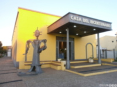
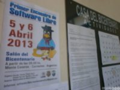
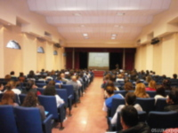
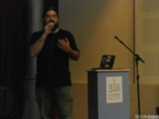
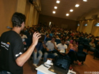
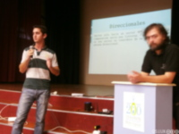
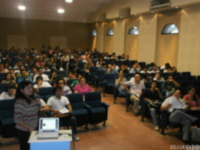
Taller de Antenas en Estación del Este
Jorge Franco y Mauro Mercuri estuvieron a cargo del taller de Antenas, en el cual todos se pusieron a armar y luego se pudieron probar las antenas con las netbooks.
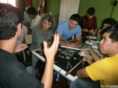
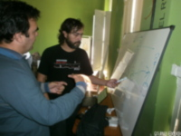
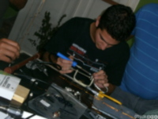
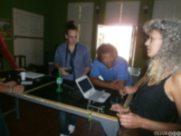
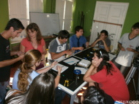
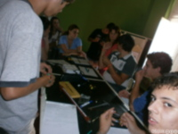
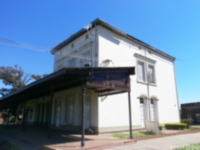
Instalando Huayra
{kind=link}
{kind=link}
{kind=link}
Almuerzos en "Cristina"
El restaurante donde almorzamos ambos días nos dejó más que satisfechos, un lujo de comida y no perdimos oportunidad de seguir probando Huayra Live.
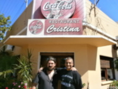
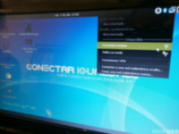
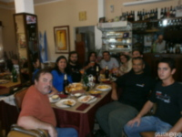
Hotel frente al río
Aunque por el hotel estuvimos poco tiempo, fue el mejor lugar para descanzar, desayunar y reponer energía para seguir dando charla.
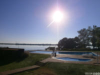
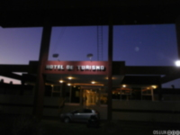
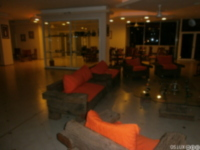
Noches de Asadito
Para cerrar cada noche, nada mejor que un asadito y la última noche en medio de un camping frente al río.
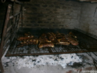
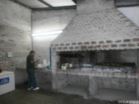
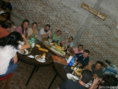
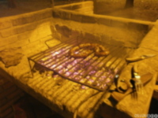
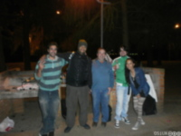
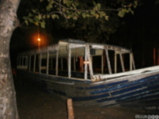
El Mural
Frente a Estación del Este hay un inmenso mural que cuenta la historia de Monte Caseros, es muy interesante…
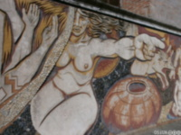
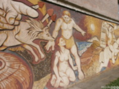
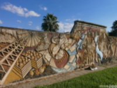
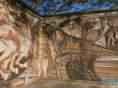
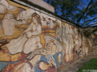
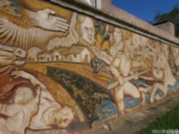
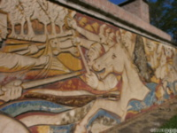
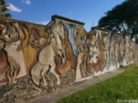
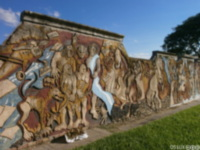
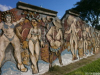
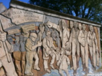
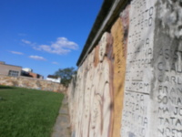
Resumen
La verdad que la pasamos bárbaro, nos trataron de maravilla, vimos muy entusiasmados a los asistentes aprendiendo sobre Software Libre, Redes Libres y Cultura Libre.
Especial agradecimiento a Gustavo del Giorgio que hizo de anfitrión, nos consiguió todo lo que fuimos necesitando, y hasta hizo de guía turístico, Adriana Enriori que nos compartió las experiencias educativas mate de por medio, también a Liliana Arbelo quien nos tuvo en cuenta como disertantes, a Rodolfo Debona por la remera de CuruzuSASO 2 y a todos aquellos que hicieron posible tremendo evento! Espero se repita y aunque me gustaría volver a participar, mejor sería que otros integrantes de la comunidad del Software Libre se acerquen a difundir conocimiento.